L’ouverture italienne commence par 1. e4 e5 2. Cf3 Cc6 3. Fc4. Les Blancs occupent le centre, développent le cavalier vers f3 puis placent le fou en c4, sur la diagonale de f7. Pour débuter, le but est de sortir ses pièces et de préparer le roque, avant de chercher une attaque.
- Avec les Blancs
- 1. e4 e5 2. Cf3 Cc6 3. Fc4
- Repère ECO : C50
Si vous avez appris les déplacements et voulez donner un sens à vos premiers coups, l’Italienne constitue un bon terrain d’apprentissage. Vous allez voir où placer vos pièces et pourquoi, sans apprendre une longue liste de variantes.
Elle vous convient si vous aimez ouvrir la partie avec 1. e4 et développer rapidement vos pièces. Elle dépend aussi de la réponse adverse : face à 1…c5 ou 1…e6, on entre dans d’autres ouvertures.
À retenir avant de jouer
- Votre objectif
- Développer rapidement les pièces et mettre le roi à l’abri avant d’attaquer f7.
- La décision au centre
- Préparer d4, souvent avec c3 et d3, en vérifiant les lignes qui s’ouvrent vers votre roi.
- Le point de vigilance
- Sur …Cf6, regarder la menace sur e4 avant de poursuivre votre dispositif.
Sommaire : choisir une partie du guide
Sur l’échiquier
Les premiers coups, un à un
Dans la notation française, C = cavalier, F = fou, D = dame et O-O = petit roque. T = tour et R = roi. Le signe x indique une capture, + un échec et # un mat. Les points de suspension indiquent un coup des Noirs.
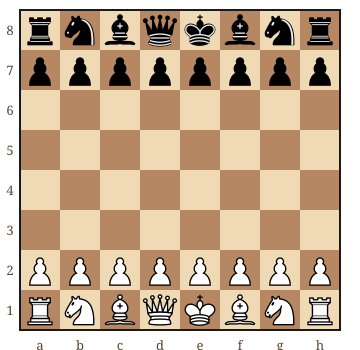
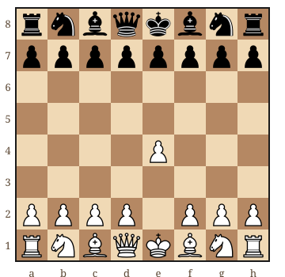
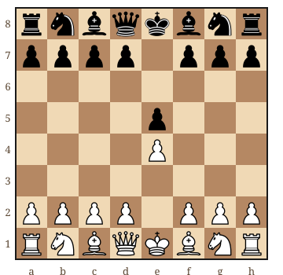
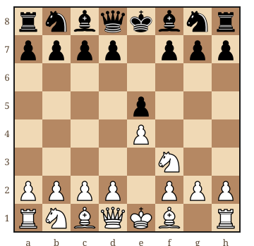
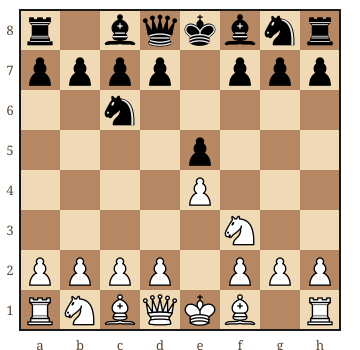
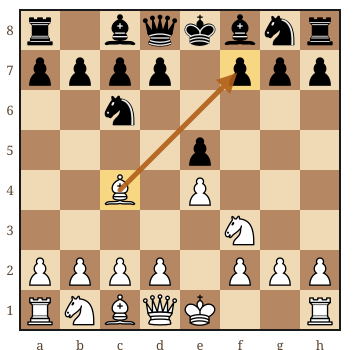
Ce que chaque coup accomplit
- 1. e4
Le pion blanc avance au centre. Il libère une diagonale pour le fou f1 et pour la dame.
- 1…e5
Les Noirs occupent à leur tour le centre et ouvrent une diagonale à leur fou f8.
- 2. Cf3
Le cavalier sort et attaque le pion e5. Le développement crée déjà une menace concrète.
- 2…Cc6
Les Noirs développent une pièce tout en défendant leur pion e5.
- 3. Fc4
Le fou rejoint c4 : c’est la position caractéristique de l’Italienne. Il vise f7, mais cela ne suffit pas à lancer une attaque.
Votre fil conducteur
Trois idées à garder en tête
Finir de sortir les pièces
Le cavalier b1 et le fou c1 doivent aussi entrer en jeu. Cherchez une case utile en regardant les menaces adverses, au lieu de rejouer immédiatement le fou c4.
Préparer le petit roque
Le cavalier g1 et le fou f1 ont quitté leur case : le passage est dégagé. Il faut encore vérifier les conditions du roque, notamment l’absence d’échec et de cases traversées attaquées.
Surveiller le centre
Le pion e4 peut devenir une cible. Avant d’avancer un autre pion ou de viser le roi, vérifiez comment e4 est défendu et ce que change le dernier coup noir.
Un exemple simple pour préparer le roque
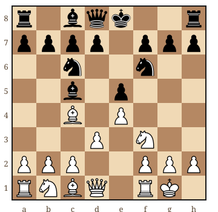
Dans cet exemple, d3 soutient e4 et ouvre une diagonale au fou c1 ; le roque place le roi en g1. C’est une illustration, pas une suite à reproduire sans regarder les coups adverses. Les autres pièces blanches restent à développer.
Deux réponses noires à reconnaître
3…Fc5 : Le Giuoco Piano
Les Noirs sortent leur fou vers une diagonale active. Continuez à développer vos pièces ; d3 est une façon simple de soutenir e4.
3…Cf6 : La défense des deux cavaliers
Les Noirs attaquent immédiatement e4. Votre priorité est de vérifier ce pion et les menaces : ne recopiez pas automatiquement le plan montré contre …Fc5.
Ce sont des repères pour vous orienter. Vous n’avez pas besoin de mémoriser leurs ramifications pour commencer à jouer.
Comprendre ce qui se joue
Lire le centre et la structure de pions
Après e4 et …e5, les deux pions centraux se bloquent mutuellement : ils ne s’attaquent pas, car un pion capture en diagonale. Leurs soutiens vont donc compter. Le cavalier f3 attaque e5 ; celui de c6 le défend. Le fou c4 apporte une pression sur la diagonale c4–d5–e6–f7, mais une poussée noire …d5 peut interrompre cette ligne. Le centre et l’activité du fou sont ainsi liés.
Le choix entre d3 et d4 change la nature de la partie. Avec d3, vous soutenez e4 et libérez le fou c1 tout en conservant le contact des pions e4 et e5. Avec d4, vous contestez e5 et acceptez plus vite des échanges. Il faut alors calculer les prises possibles. Une position ouverte récompense les pièces déjà développées, mais profite aussi aux pièces adverses : ouvrir le centre n’est pas un avantage automatique.
La case f7 est une faiblesse initiale parce que seul le roi noir la défend dans la position de départ. Cela en fait un repère d’observation, pas un ordre de sacrifier. Avant de viser f7 avec un cavalier ou une dame, comparez le nombre d’attaquants, les réponses du roi et le temps laissé aux autres pièces noires. Une attaque menée avec deux pièces tandis que les autres dorment peut s’arrêter très vite.
Quelles cases chercher pour vos pièces ?
Ces placements sont des repères à vérifier dans la position, pas des coups à jouer sans regarder l’adversaire.
- Cavalier g1f3
- Il attaque e5 et contrôle d4. S’il repart attaquer ailleurs, vérifiez ce qu’il cesse de défendre.
- Fou f1c4
- Sa diagonale vise f7 tant qu’aucun pion ou échange ne l’interrompt. Une attaque de pion sur le fou oblige à réévaluer sa case.
- Fou c1une diagonale libérée par d3 ou d4
- Ne le laissez pas définitivement enfermé. Sa sortie dépend du centre et des pièces qu’il peut viser.
- Cavalier b1c3 ou d2 selon les pions
- Si vous voulez placer un pion en c3 pour préparer d4, Cc3 et c3 ne sont pas immédiatement compatibles.
- Roi et tourspetit roque, puis une colonne utile
- Le roque peut rendre f1 disponible à une tour. La placer en e1 n’a de sens qu’en fonction du centre et du rôle du pion e4.
Comment réagir aux idées adverses
Si les Noirs jouent …Cf6
Le cavalier attaque e4. Commencez par compter les défenseurs du pion : après les seuls coups e4, Cf3 et Fc4, aucun pion blanc ne le protège encore. Jouer d3 ajoute ce soutien tout en ouvrant le fou c1. Cc3 est aussi une idée de développement dans certaines positions, mais il occupe une case que vous pourriez vouloir réserver au pion c.
Si les Noirs préparent …d5
La poussée peut gagner de l’espace, toucher le fou c4 et réduire son action vers f7. Ne pensez pas uniquement à votre attaque sur le roi : demandez-vous quelles captures centrales deviennent possibles. Si un échange ouvre des colonnes, le camp dont le roi reste au centre peut subir les conséquences.
Si votre fou est attaqué
Un coup de pion qui gagne un temps sur le fou ne gagne pas forcément une pièce. Cherchez d’abord les retraites légales, puis comparez le maintien de la diagonale et le coût en temps. Reculer un fou pour le conserver peut être raisonnable ; répéter ses déplacements sans menace réelle retarde les autres pièces.
Une décision concrète
Les deux cavaliers : voir la menace avant de poursuivre le plan
Les Noirs viennent de jouer 3…Cf6 au lieu de …Fc5. Le dessin ressemble à votre développement habituel, mais le pion e4 est attaqué. Il faut mettre cette différence au premier plan.
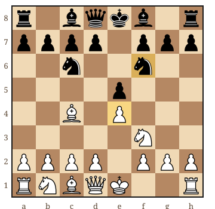
Comment soutenir e4 sans sortir la dame et en donnant une diagonale au fou c1 ?
Repérez d’abord les menaces et les cases contrôlées, puis proposez une réponse.
Lire l’analyse de la position
4. d3 est une réponse cohérente : le pion d3 défend e4 et ouvre la diagonale du fou c1. Ce coup ne gagne rien de force ; il résout un problème concret tout en préparant le développement. La leçon est de donner une fonction à votre prochain coup plutôt que de recopier celui d’une autre partie.
Comparer pour comprendre
Ouvrir le centre : regarder aussi les échecs adverses
Préparer c3 puis d4 permet aux Blancs de contester e5 et de reconstruire un centre avec deux pions après un échange. Mais la transformation du centre ouvre aussi des diagonales aux Noirs. Pour choisir une poussée, il faut examiner les échecs adverses avant de compter seulement l’espace gagné.
Dans la position de départ de l’atelier, les Blancs viennent de reprendre en d4 avec le pion c3. Leurs pions d4 et e4 sont côte à côte : ils occupent de l’espace, mais ne se protègent pas mutuellement. La case c3 est redevenue libre et le pion d2 a disparu. Ces deux détails rendent possible un échec du fou noir sur la diagonale vers e1.
Position commune de départ :
1. e4 e5 2. Cf3 Cc6 3. Fc4 Fc5 4. c3 Cf6 5. d4 exd4 6. cxd4
Rejouez cette position, puis comparez les suites ci-dessous. Ce sont des exemples commentés : elles ne constituent pas deux recommandations équivalentes ni des coups à reproduire sans calculer.
Le centre blanc ouvre une diagonale noire
6… Fb4+
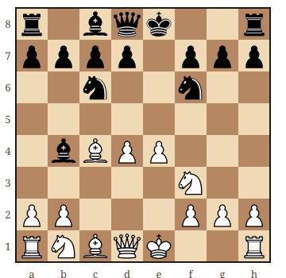
Les Noirs jouent 6…Fb4+. Le fou quitte c5 pour b4 et donne échec au roi e1 en passant par c3 et d2, deux cases désormais libres. L’échec ne signifie pas que le centre blanc était une erreur : il montre qu’une rupture centrale doit être accompagnée d’un calcul des lignes ouvertes.
Le roi ne peut pas ignorer l’échec pour continuer son propre plan. Avant de choisir une parade, examinez si une pièce peut s’interposer en se développant. Dans cette position, plusieurs décisions sont possibles ; l’atelier poursuit avec une solution de développement.
Parer l’échec en développant
6… Fb4+ 7. Fd2 Fxd2+ 8. Cbxd2
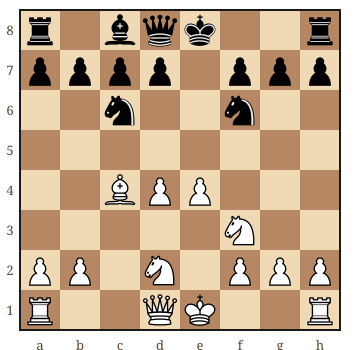
Après 7. Fd2, les Blancs interposent leur fou c1. Dans la suite illustrative …Fxd2+ 8. Cbxd2, le cavalier b1 reprend le fou noir en d2. Les fous échangés ont la même valeur habituelle ; aucun camp n’a gagné de matériel dans cette séquence.
Le résultat important est ailleurs : les Blancs ont répondu aux échecs et développé une pièce, tandis que la structure centrale demeure. La notation Cbxd2 précise le cavalier venant de b1, car celui de f3 peut lui aussi atteindre d2. Lire cette précision aide à suivre la position réelle.
Vérifiez votre compréhension
Le pion e4 protège-t-il le pion d4 ?
Non. Deux pions côte à côte ne se défendent pas. Le pion e4 contrôle d5 et f5 ; le pion d4 contrôle c5 et e5.
Pourquoi …Fb4 donne-t-il échec après la reprise cxd4 ?
Le pion qui était en c3 a quitté cette case et le pion d2 n’y est plus. La diagonale b4–c3–d2–e1 est donc ouverte jusqu’au roi.
Pourquoi écrire Cbxd2 plutôt que seulement Cxd2 dans l’exemple ?
Les cavaliers b1 et f3 peuvent tous deux prendre en d2. La lettre b identifie celui qui reprend et permet de reconstruire la position sans ambiguïté.
À appliquer dans vos parties : En partie, avant d’avancer d4, vérifiez ce que les captures enlèvent comme obstacles autour de votre roi. Dans votre analyse, cherchez une rupture centrale puis tracez toutes les nouvelles diagonales : vous entraînerez le calcul, pas seulement la mémoire de l’Italienne.
Reconnaître les embranchements
Deux variantes à comprendre pour commencer
Ces lignes courtes montrent ce qui change dans le centre et le développement. Rejouez les coups, puis formulez le plan avec vos propres mots ; les réponses adverses peuvent vous amener à une autre position.
Le jeu calme : d3 avant d4
1. e4 e5 2. Cf3 Cc6 3. Fc4 Fc5 4. d3 Cf6
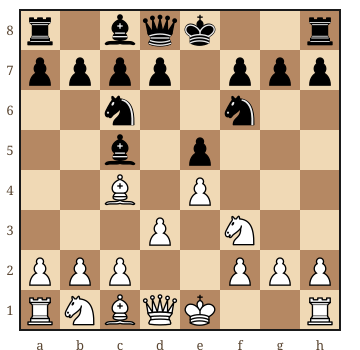
Avec 4. d3, les Blancs soutiennent e4 et ouvrent le passage au fou c1. Le centre reste en place : les deux camps peuvent terminer leur développement avant de décider comment le transformer.
Le plan à comprendre : Développez le cavalier b1, mettez le roi à l’abri et observez si c3 puis d4 sont possibles. Un coup comme c3 a un coût : il retire temporairement la case c3 au cavalier. Il faut choisir un ordre cohérent, pas empiler des coups connus.
Les deux cavaliers : la pression immédiate sur e4
1. e4 e5 2. Cf3 Cc6 3. Fc4 Cf6 4. d3 Fc5
Le coup 3…Cf6 attaque e4. Après 4. d3, les Blancs répondent à cette menace par un soutien de pion ; les Noirs développent leur fou. Cette position peut rejoindre le jeu calme par un ordre de coups différent.
Le plan à comprendre : La différence utile n’est pas seulement le nom de la variante : avant d3, e4 était menacé. En comparant les deux suites, repérez le moment où vous devez traiter cette attaque. C’est ainsi que vous éviterez de jouer une préparation de mémoire.
Calculer avant de jouer
Piège et vigilance : Le pion empoisonné et le mat du cavalier
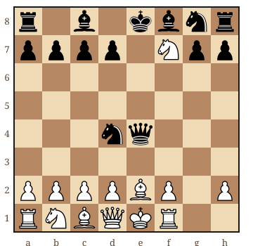
1. e4 e5 2. Cf3 Cc6 3. Fc4 Cd4 4. Cxe5 Dg5 5. Cxf7 Dxg2 6. Tf1 Dxe4+ 7. Fe2
Avant de lire la suite, repérez les échecs, les captures et les pièces attaquées.
Voir la suite et le mécanisme
7… Cf3#
Les Blancs ont cherché deux pions avec Cxe5 puis Cxf7. Pendant ce temps, la dame noire est entrée sur les cases g2 et e4. Après 7. Fe2, le cavalier d4 peut donner mat en f3 : le fou e2 ne peut pas le prendre, car il est cloué par la dame e4 devant le roi e1. La dernière position est un mat réel, pas simplement une attaque prometteuse.
Comment éviter le problème ou y répondre
Au lieu de 4. Cxe5, 4. Cxd4 échange le cavalier intrus ; après …exd4, les Blancs peuvent roquer. La leçon est de vérifier les entrées de dame contre votre roi avant de ramasser un pion central. Cette suite de mat dépend des erreurs blanches : les Noirs ne peuvent pas l’imposer à toute réponse.
Suite de référence à rejouer depuis le début :
1. e4 e5 2. Cf3 Cc6 3. Fc4 Cd4 4. Cxd4 exd4 5. O-O
Passer de l’ouverture au milieu de partie
Vous avez dépassé les seuls coups d’ouverture lorsque vos deux cavaliers et vos fous ont un rôle, que le roi est en sécurité et que vous savez ce que vous voulez faire au centre. Votre prochaine question sera alors : préparer d4, maintenir la tension ou améliorer une pièce ? La réponse dépend des pions et des échanges déjà joués.
Après une partie, cherchez le premier moment où une menace sur e4, sur votre fou ou sur votre roi vous a échappé. Cette position est plus utile à retravailler qu’une nouvelle liste de dix coups théoriques.
Le nom et ses origines
Pourquoi dit-on « ouverture italienne » ?
Ce nom renvoie à la tradition des maîtres italiens qui ont étudié et transmis cette ouverture. Il ne désigne pas une invention attribuable avec certitude à une seule personne.
Des analyses anciennes figurent chez Damiano, dans son traité de 1512, puis chez Giulio Cesare Polerio au XVIe siècle et Gioachino Greco au XVIIe siècle. L’Italienne s’est construite au fil de ces travaux ; mieux vaut parler d’une histoire collective que d’un créateur unique.
Après 3…Fc5, on parle de Giuoco Piano, généralement traduit par « jeu calme ». Ce nom désigne une branche de l’Italienne : il ne signifie pas que toutes les parties seront tranquilles. Source
Les erreurs à éviter dans cette ouverture
Confondre une cible avec une victoire
Le fou c4 vise f7, un pion initialement défendu seulement par le roi. Ce constat ne justifie pas à lui seul un sacrifice ou une sortie précipitée de la dame.
Jouer le plan sans regarder les Noirs
Après …Cf6, les Noirs attaquent e4. Avant chaque coup, demandez-vous quelle menace vient d’apparaître et si une de vos pièces est en prise.
Ne sortir que le fou et le cavalier roi
L’Italienne ne se termine pas au troisième coup. Le cavalier b1 et le fou c1 doivent participer ; gardez aussi votre roi en sécurité.
À vous de jouer
Un exercice pour vérifier l’idée
Les Blancs jouent. Quel coup met le roi à l’abri tout en activant la tour h1 ?
Prenez quelques secondes pour choisir et expliquer votre coup.
Voir la réponse expliquée
5. O-O, le petit roque : le roi va de e1 à g1 et la tour de h1 à f1. Dans cette position, le roi n’est pas en échec et les cases e1, f1 et g1 ne sont pas attaquées. Le roque est donc légal. Il reste ensuite à développer l’aile dame.
Votre prochaine séance de pratique
- Rejouez les cinq premiers demi-coups et expliquez leur rôle sans regarder le texte.
- Reprenez la position après 3. Fc4 : comparez les idées de …Fc5 et …Cf6, sans apprendre de variante longue.
- Jouez une partie lente. Après la partie, vérifiez le développement des pièces et la sécurité de votre roi.
Besoin de comprendre vos propres parties ? Les cours d’échecs permettent de travailler à partir de vos positions.
Quelles ouvertures comparer ensuite ?
- Ouverture espagnole : premiers coups et plans pour débuter
Comparer le placement du fou en b5 à celui en c4.
- Ouverture écossaise : ouvrir le centre avec 3. d4
Étudier une ouverture où les Blancs jouent d4 dès le troisième coup.
Retrouver les onze ouvertures et choisir votre prochaine fiche.
Questions fréquentes
Quels sont les premiers coups de l’ouverture italienne ?
L’Italienne commence par 1. e4 e5 2. Cf3 Cc6 3. Fc4. C signifie cavalier et F signifie fou dans la notation française. Les Noirs choisissent ensuite leur réponse.
Qui a inventé l’ouverture italienne ?
On ne peut pas attribuer sa création à un inventeur unique. Damiano, Polerio et Greco font partie des auteurs anciens qui ont étudié les positions associées à cette ouverture.
Quelle différence entre l’Italienne et le Giuoco Piano ?
L’Italienne est définie après 1. e4 e5 2. Cf3 Cc6 3. Fc4. Le Giuoco Piano est la branche où les Noirs répondent 3…Fc5. Après 3…Cf6, on parle de défense des deux cavaliers.
Peut-on jouer l’Italienne contre toutes les défenses ?
Non. La position caractéristique suppose notamment les réponses …e5 et …Cc6. Si les Noirs choisissent une autre structure, appliquez les principes d’ouverture en vous adaptant à la position.
Sources et vérification
Les références ci-dessous documentent l’histoire et la nomenclature. Les explications pédagogiques et l’exercice sont adaptés aux débutants ; les positions et les suites commentées ont été vérifiées par rejeu des coups.
- Chess.com — Italian Game : position initiale et histoire — consulté le 24 novembre 2026
- Bill Wall — The Giuoco Piano is No Quiet Game — consulté le 24 novembre 2026
- Lichess — nomenclature des ouvertures, fichier C — consulté le 24 novembre 2026
- Lichess — nomenclature et suites des ouvertures — consulté le 24 novembre 2026